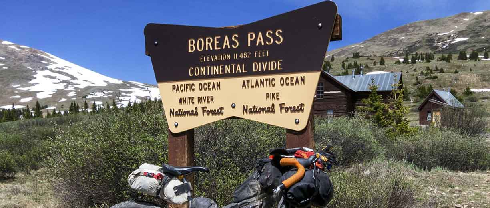
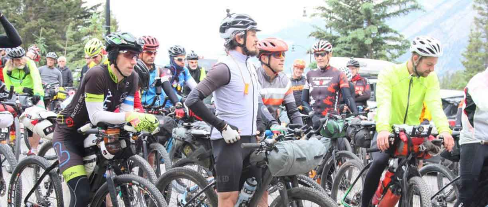

Cycle the Continental Divide



Presented by The Mountain Spoke, Cycle the Continental Divide is the only race of its kind. Comprised of some of the most exciting sections of remote trail in the Rocky Mountains, Cycle the Continental Divide is a challenging course that takes riders over ridgelines, past alpine lakes and down flowing drainages while navigating hundres of miles of remote connected trails.
$25,000 cash purse!
Limited to 500 participants.
Registration Deadline is Oct. 25th.
Registration Deadline is Oct. 25th.
Date:
Sept. 3 - 11Route:
Roosville, MT to Polaris, MT (542.3 mi)Cost:
$150Basic Requirements
- Spare Parts- chains, cassettes, bottom brackets, chainrings, etc.
- Camping Gear- tent w/rainfly, ground tarp, sleeping bag (rated to below 20 degrees F), inflatable mattress, etc.
- Rain Gear- panchos, pannier covers, dry bags, etc.
- Water Filter- 1 required for each person in your party.
- Sealant filled tubes or tubeless tires- Puncturevine or "Goat's Head" is an area plant species that produces thumbtack-like burs capable of puncturing bike tires.